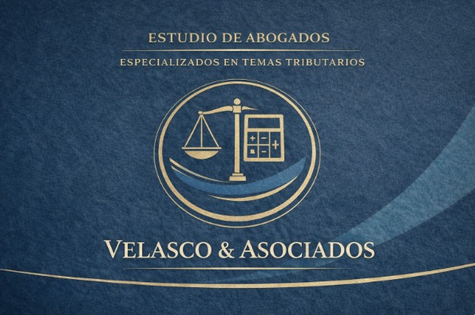

| Inicio | Nosotros | Areas | Equipo | Contacto |

|
Conocimiento legal "Confíe en nuestro profundo conocimiento legal para proteger sus derechos y alcanzar soluciones efectivas". |
Ética, deontología y cumplimiento "Nuestra ética y profesionalismo garantizan una representación legal sólida y justa. ¡Confíe en nosotros para protegerlo!". |
Gestión eficiente "Nuestra gestión eficiente maximiza sus posibilidades de éxito legal. Confíe en nuestro equipo para resultados excepcionales". |
Velasco & Asociados es un Estudio de Abogados que brinda asesoría legal integral a personas naturales y empresas, con una especialización sólida en Derecho Tributario, respaldada por un equipo multidisciplinario conformado por abogados y contadores públicos. Nuestro enfoque combina análisis legal y financiero, lo que nos permite ofrecer soluciones estratégicas, preventivas y efectivas, tanto en sede administrativa como judicial.
Deontología. El abogado de nuestra firma CVM abogados actúa con independencia, libre de influencias externas, para garantizar la defensa de los intereses de su cliente. La lealtad hacia el cliente es inquebrantable, actuando siempre en su mejor interés. Vamos mucho más allá de la confidencialidad y el secreto profesional, a menos que exista una obligación legal de revelarla, la cual es también revisable. Todo los actos tienen como fin la diligencia, honestidad y justicia, por lo que se exige a cada integrante de nuestra firma el deber de ser honesto y veraz en todas sus actuaciones, tanto con su cliente como con el tribunal y las demás partes involucradas en los procesos, buscando siempre la resolución justa de los conflictos.
+ 1200 CLIENTES |
98% CASOS DE EXITO |
1000 CONSULTAS LEGALES |
5 AÑOS DE EXPERIENCIA |
| Si tiene una consulta urgente llene el formulario y el equipo de CVM Abogados se contactará. | Av. Del Parque Norte 1160 Urb. Corpac San Borja, Lima-Perú. Edificio Centro Empresarial Parque Norte Pisos 1; 2; 3; 5 y 7. |
01 325 9919 +51 999 888 777 consultas@cvmabogados.com.pe |
| Nombre y apellido | _____________________________________ |
| correo electronico | _____________________________________ |
| celular | _____________________________________ |
| Derecho penal | _____________________________________ |
| Mensaje | _____________________________________ |
| Enviar |
|
En CVM Abogados brindamos 📞(01)123 456 (+51)999 888 777 Av. Del Parque Norte 1160 |
MENU |
Área y sectoresDerecho PenalContrataciones con el Estado Derecho Administrativo Derecho Civil Derecho Constitucional Derecho de Familia Derecho de Sucesiones (Testamentos y Herencias) Derecho del Consumidor Derecho Laboral Derecho Minero Derecho Municipal Arbitraje y litigación nacional e internacional |